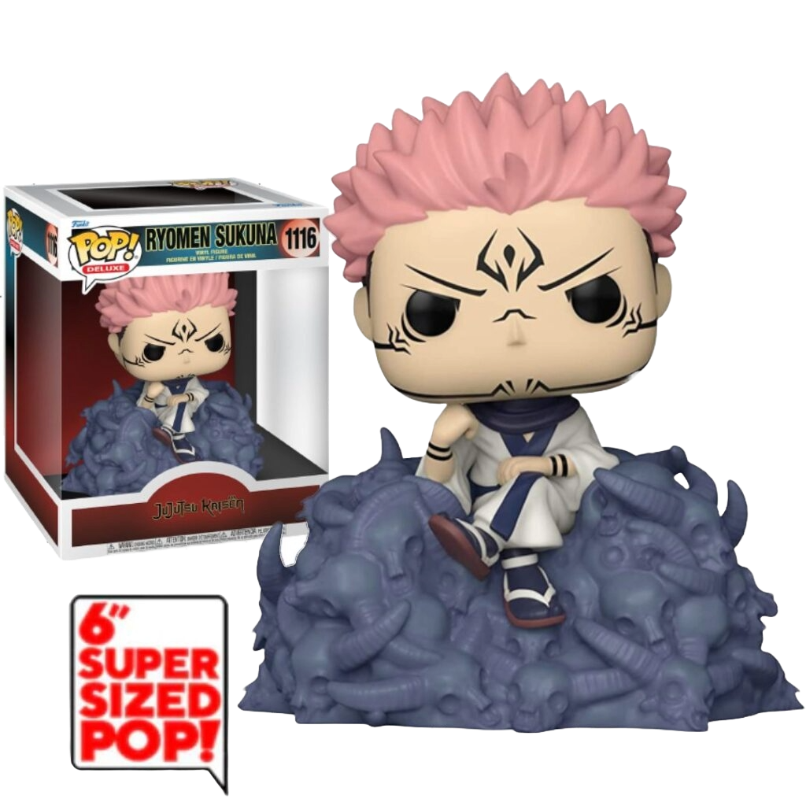

Ryomen sSukuna

Sukuna, también conocido como Ryomen Sukuna, es uno de los principales antagonistas de la serie de manga y anime "Jujutsu Kaisen"

Sukuna, también conocido como Ryomen Sukuna, es uno de los principales antagonistas de la serie de manga y anime "Jujutsu Kaisen"
Itachi Uchiha es un personaje del manga y anime "Naruto", creado por Masashi Kishimoto. Es un ninja del Clan Uchiha de la Aldea Oculta de la Hoja

Eren Yeager es el protagonista principal del manga y anime "Attack on Titan" (Shingeki no Kyojin)

Página Web realizada por Cristian González